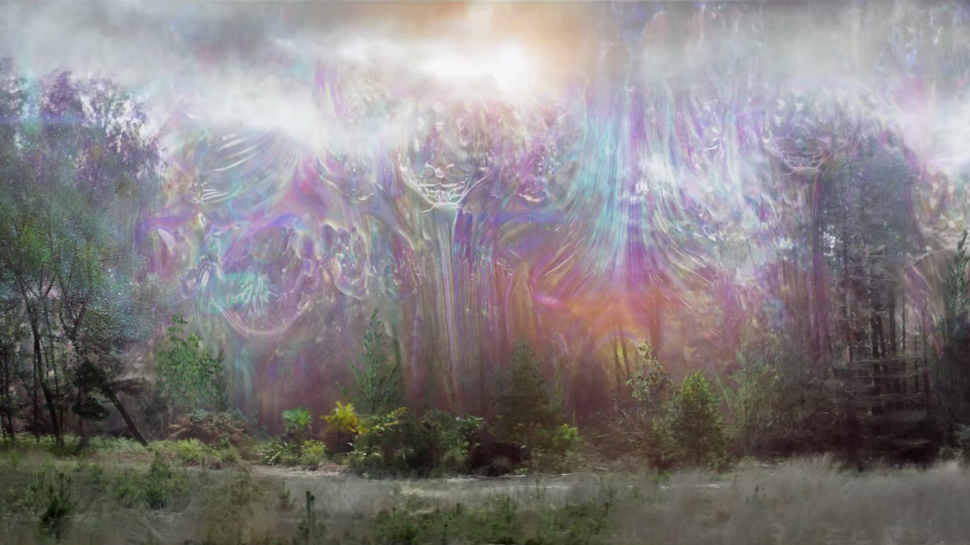
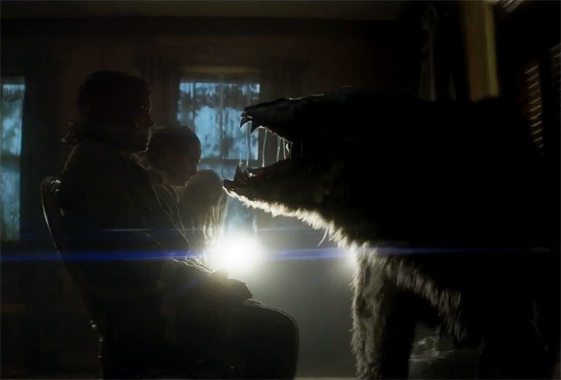
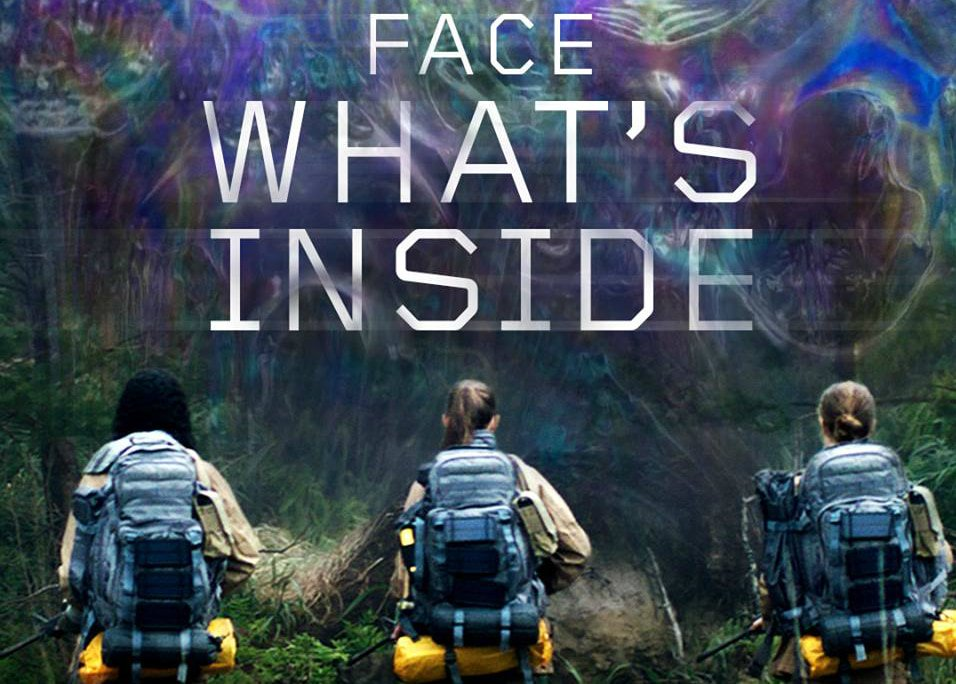

Loosely adapted from Jeff VanderMeer's supposedly unfilmable 2014 novel – the first of his Southern Reach Trilogy – the film's premise actually starts off relatively simple. Biologist soldier Lena (Natalie Portman) is mourning the disappearance of her military husband, Kane (Oscar Isaac), who has been missing in action for a year. Without any satisfying explanation, Kane suddenly returns home, but it's evident that something has changed him – he doesn't remember anything about his mission, he looks incredibly pale and promptly starts coughing up blood.
He's been inside the "Shimmer" – a mesmerising, dome-shaped membrane that is constantly expanding over a swampland region of southern Florida. Everything inside the bubble's walls is ominously classified as "Area X", as if to signify some form of of extra-terrestrial involvement. To find out what has happened to her husband and discover the cause of this strange phenomenon, Lena decides to enter the quarantined zone herself.
Annihilation is not your typical Sci-Fi thriller movie. It doesn't focus on large, action set-pieces, but rather on psychological horror. The movie takes expectations and subverts them, taking what the audience thinks it knows and turning it upside down. Are things really as they appear, or something else entirely? One never knows when inside the 'Shimmer', and this movie pulls it off.
One scene in particular stands out in terms of what makes this movie so special. There is a scene a little over halfway through involving a bear, or what the audience might believe is a bear. Rather than just having the bear downright attack the protagonists, the movie has rising tension as the bear uses its mutation to draw them to it. It is a beautiful example of how most humans fear the unknown far more than they would something in front of them. It is this kind of horror that takes Annihilation and puts it above all others in this genre.
On Rotten Tomatoes, the film has an approval rating of 87%, and an average rating of 7.7/10. The website's critical consensus reads, "Annihilation backs up its sci-fi visual wonders and visceral genre thrills with an impressively ambitious—and surprisingly strange—exploration of challenging themes that should leave audiences pondering long after the end credits roll." On Metacritic, the film has a weighted average score of 79 out of 100, indicating "generally favorable reviews". Audiences polled by CinemaScore gave the film an average grade of "C" on an A+ to F scale, while PostTrak reported filmgoers gave it a 71% overall positive score.
The film was released theatrically in the United States on February 23, 2018, by Paramount Pictures, and digitally in other markets on March 12, 2018, by Netflix. Due to a poorly received test screening, David Ellison, a financier and producer at Paramount, became concerned that the film was "too intellectual" and "too complicated", and demanded changes to make it appeal to a wider audience, including making Portman's character more sympathetic, and changing the ending. Producer Scott Rudin sided with the director, who did not want to alter the film. Rudin, who had final cut privilege, defended the film and refused to take notes from Ellison. On December 7, 2017, it was announced that due to the clashes between Rudin and Ellison, and the shift in Paramount's leadership, a deal was struck allowing Netflix to distribute the film internationally.
